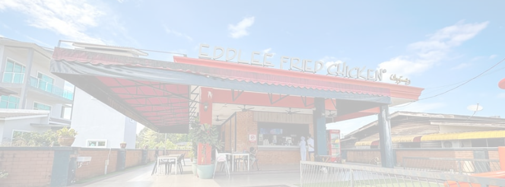

FAQs
What's Eddlee Chicken's Menu?
All menu items are available on the website. Please visit 'Menu'
Does Eddlee Chicken serve halal chicken?
Yes, we use halal chicken in preparing all our crunchy signature meals. Our chicken supplies are sourced from authorized suppliers who adhere to strict food safety quality standards and halal practices, ensuring the highest quality for our customers. Feel free to let me know if you need any further adjustments!
Does Eddlee Chicken deliver?
Yes, you can have Eddlee Fried Chicken delivered directly to your home! Our delivery service is available through Grab Food, Food Panda, and Halo Delivery.
How can I find Eddlee Chicken restaurant locations?
All Eddlee Chicken restaurant locations are listed on our website. To find your nearest branch, please visit the 'About' section for more information.
What are Eddlee Chicken operating hours?
Eddlee Fried Chicken typically operates from 2:00 PM to 10:00 PM. However, operating hours may vary depending on the location. Please check with your local Eddlee Fried Chicken for specific hours.
What is Eddlee Fried Chicken Origin?
The original brand concept was first founded by Eddlee himself in Kota Bharu, Kelantan, Malaysia.